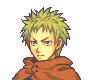

Support Rank C

ねえ あんたHey, you.

うわっ
な なんだよお前Whoa— wh-what do you want?!
あんた
なかなかスジいいじゃんNot bad, you've got pretty good moves.
だから 誰だよお前？So who the hell are you?
・・・あたしを知らないなんて
あんたモグリ？...You don't know me? Are you some kind of amateur?
あたしはキャス
怪盗よ！I'm Cath, the master thief!
・・・知らねえ...Never heard of you.
うわ むかつくーUgh, that's so annoying.
あたしはセンパイなのよ
少しは敬意を払いなさいってのI'm your senior here, you could show a little respect.
関係ねえDon't care.
おれは自分で盗みのウデみがいたんだ
これからだってそうするI sharpened my thieving skills on my own, and I'll keep doing it that way.
ムリムリ
あんた一人じゃそこまでよNo way, no way. On your own, that's as far as you'll get.
ま しょうがない
あたしの下できたえ直してあげるわWell, can't help it — I'll retrain you properly, under me.
おい なんでおれが
そんなこと・・・Hey, why would I do something like—
とゆーわけでSo, that being the case—
今日から あんた
あたしの子分その１ねStarting today, you're my underling number one.
これからは
あたしのために働きなさいFrom now on, work for me.
だれが！Like hell!
ふーん あっそ
んなこと言ってていいのHmm? Oh, are you sure you want to talk like that?
これ
あんたの袋でしょThis is your bag, isn't it?
あっ！Ah!
か 返せよ！G-give it back!
Support Rank B
おい！Hey!
あ あんたA-ah, you—
あれ 返せよ！
早く！That thing, give it back! Now!
な 何よ・・・
そんなに怒んなくたって 返すわよW-what... you don't have to get so mad, I'll give it back.
・・・・・・.......
何そのラクガキ？ だれ？What's this scribble? Who is it?
院長先生・・・The headmaster...
院・・・？Headmaster...?
・・・あんた 孤児なの...You're an orphan?
・・・おれ あんまり
勉強できなかったけど...I wasn't very good at studying, but—
みんなで絵をかいたとき
ほめてもらったんだwhen we all drew pictures together, I got praised.
チャドは手先が器用だから
きっと画家になれるって・・・"Chad, you're good with your hands, you could definitely become a painter"...
そう言ってくれたんだThat's what he told me.
・・・・・・
そうなんだ・・・...I see...
・・・・・・
・・・・・・.......
あーもうっ
こういうのはニガテ！Argh, I'm bad at this kind of thing!
あたしはもっと前向きに生きるの
だから子分その１もそうしなさい！I live my life looking forward, so you should too, underling number one!
誰が「その１」だよっ！Who's "number one"?!
ふふん
あんたよ 子分その１！Heh, you, of course! Underling number one!
なってねえって
言ってるだろ！？I told you I never agreed to that!
Support Rank A
よ 子分その１
元気にしてる？Yo, underling number one, how's it going?
・・・知るか...Who knows.
見てたわよ あんた
なかなかウデあげたみたいじゃんI was watching — looks like you've gotten pretty good.
ま
あたしほどじゃないけどーThough not as good as me, of course.
言ってろよKeep telling yourself that.
おれはあんたの子分になんて
なった覚えねえからなI don't remember ever becoming your underling, you know.
あっ
ちょっと待ちなってHey, wait a sec.
子分がいやならさ
相棒はどうよ？If you don't like "underling," how about "partner"?
・・・相棒？...Partner?
そ
あたしとあんたでコンビくむのYeah, you and me, teaming up.
まずしき者を助ける
怪盗二人組！A duo of master thieves who help the poor!
どう？How about it?
二人・・・The two of us...
・・・それはそれでイヤだ...That's no good either.
ちょっ？
ちょっとあんた！Wha—? Hey, you!
このあたしが さそってあげてんのよ！？
こら 待ちなさいってば！I'm the one inviting you here! Hey, wait up, I said!